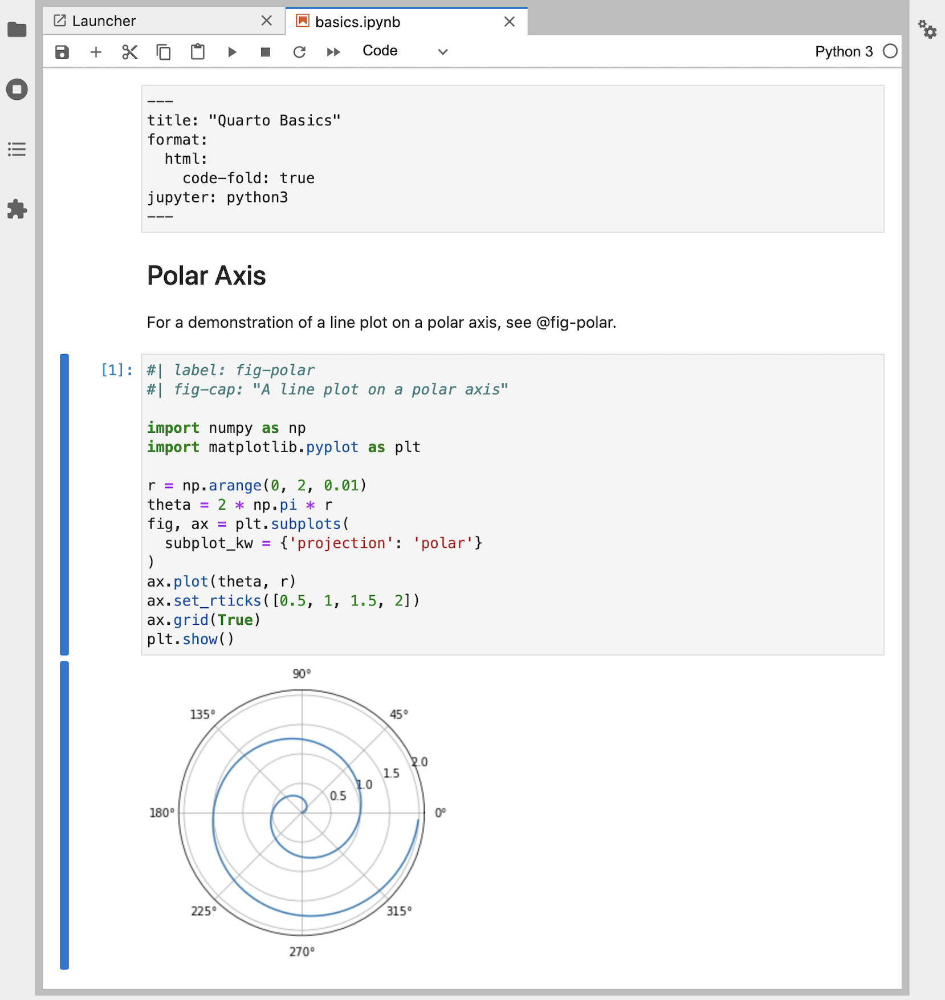
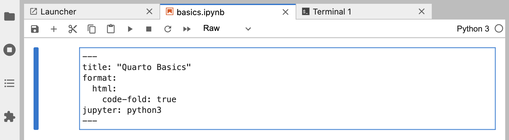

Tutorial: Hello, Quarto
../_tool-chooser.mdOverview
In this tutorial we’ll show you how to use Jupyter Lab with Quarto. You’ll edit code and markdown in Jupyter Lab, just as you would with any notebook, and preview the rendered document in a web browser as you work.
Below is an overview of how this will look.

The notebook on the left is rendered into the HTML version you see on the right. This is the basic model for Quarto publishing—take a source document (in this case a notebook) and render it to a variety of output formats, including HTML, PDF, MS Word, etc.
Note that while this tutorial uses Python, using Julia (via the IJulia kernel) is also well supported. See the article on Using Julia for additional details.
Rendering
We’ll start out by opening a notebook (hello.ipynb) in Jupyter Lab and rendering it to a couple of formats. If you want to follow along step-by-step in your own environment, download the notebook below.
Then, create a new directory to work within and copy the notebook into this directory.
Once you’ve done that, switch to this directory in a Terminal, install notebook dependencies (if necessary), and open Jupyter Lab to get started working with the notebook. The commands you can use for installation and opening Jupyter Lab are given in the table below.
| Platform | Commands |
|---|---|
| Mac/Linux | |
| Windows | |
Here is our notebook in Jupyter Lab.
---
title: "Quarto Basics"
format:
html:
code-fold: true
jupyter: python3
---
For a demonstration of a line plot on a polar axis, see @fig-polar.
```{python}
#| label: fig-polar
#| fig-cap: "A line plot on a polar axis"
import numpy as np
import matplotlib.pyplot as plt
r = np.arange(0, 2, 0.01)
theta = 2 * np.pi * r
fig, ax = plt.subplots(
subplot_kw = {'projection': 'polar'}
)
ax.plot(theta, r)
ax.set_rticks([0.5, 1, 1.5, 2])
ax.grid(True)
plt.show()
```
Next, create a new Terminal within Jupyter Lab to use for Quarto commands.

And finally, render the notebook to a couple of formats.
Terminal
quarto render hello.ipynb --to html
quarto render hello.ipynb --to docxNote that the target file (in this case hello.ipynb) should always be the very first command line argument.
When you render a Jupyter notebook with Quarto, the contents of the notebook (code, markdown, and outputs) are converted to plain markdown and then processed by Pandoc, which creates the finished format.

Authoring
The quarto render command is used to create the final version of your document for distribution. However, during authoring you’ll use the quarto preview command. Try it now from the Terminal with hello.ipynb.
Terminal
quarto preview hello.ipynbThis will render your document and then display it in a web browser.

You might want to position Jupyter Lab and the browser preview side-by-side so you can see changes as you work.
To see live preview in action:
Change the the line of code that defines
thetaas follows:theta = 4 * np.pi * rRe-run the code cell to generate a new version of the plot.
Save the notebook (the preview will update automatically).
This is the basic workflow for authoring with Quarto.
There are few different types of cells in our notebook, let’s work a bit with each type.
YAML Options
You are likely already familiar with markdown and code cells, but there is a new type of cell (“Raw”) that is used for document-level YAML options.
---
title: "Quarto Basics"
format:
html:
code-fold: true
jupyter: python3
---
Try changing the code-fold option to false.
format:
html:
code-fold: falseThen save the notebook. You’ll notice that the code is now shown above the plot, where previously it was hidden with a Code button that could be used to show it.
Markdown Cells
Markdown cells contain raw markdown that will be passed through to Quarto during rendering. You can use any valid Quarto markdown syntax in these cells. Here we specify a header and a cross-reference to the figure created in the code cell below.
## Polar Axis
For a demonstration of a line plot on a polar axis, see @fig-polar.
Try changing the header and saving the notebook—the preview will update with the new header text.
Code Cells
You are likely already familiar with code cells, like the one shown below.
```{python}
#| label: fig-polar
#| fig-cap: "A line plot on a polar axis"
import numpy as np
import matplotlib.pyplot as plt
r = np.arange(0, 2, 0.01)
theta = 2 * np.pi * r
fig, ax = plt.subplots(
subplot_kw = {'projection': 'polar'}
)
ax.plot(theta, r)
ax.set_rticks([0.5, 1, 1.5, 2])
ax.grid(True)
plt.show()
```
But there are some new components at the top of the code cell: label and fig-capoptions. Cell options are written in YAML using a specially prefixed comment (#|).
In this example, the cell options are used to make the figure cross-reference-able. Try changing the fig-cap and/or the code, running the cell, and then saving the notebook to see the updated preview.
There are a wide variety of cell options that you can apply to tailor your output. We’ll delve into these options in the next tutorial.
One particularly useful cell option for figures is fig-alt, which enables you to add alternative text to images for users with visual impairments. See Amy Cesal’s article on Writing Alt Text for Data Visualization to learn more.
_footer.md